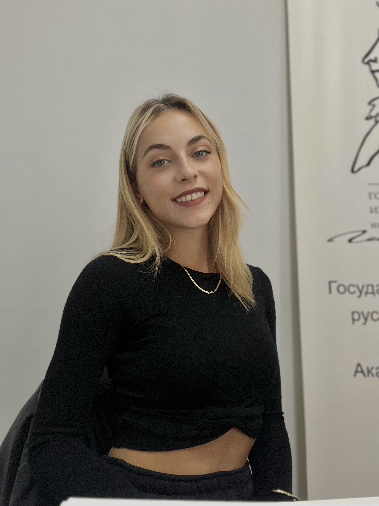

Healthcare marketing | Global communications | HCP engagement
Pharma marketing and communications professional
People-first communicator and structured project doer with experience in life sciences and global healthcare environments. I turn briefs into clear plans, content, and measurable outcomes across digital campaigns, stakeholder coordination, medical/legal review flows, and reporting.

I am a people-first communicator and structured project doer with experience in life sciences and global healthcare environments, spanning digital marketing, campaigns, stakeholder coordination, and reporting.
My work sits between strategy and delivery: preparing compliant digital materials with country teams, agencies, and legal/medical reviewers; coordinating HCP-focused communications; and translating research and campaign inputs into practical next steps.
HCP-focused communication initiatives, internal and external materials, affiliate coordination, and workshop support
Microsoft Office Suite, Veeva, Google Workspace, GPT tools, Otter.ai, Canva, CRM systems, ERP systems, Dash Hudson, and Sprinklr
Project coordination, operation & marketing logistics, event planning, partner and supplier liaison
Supplier management, purchase order handling, invoicing, and CRM data maintenance
Social media strategy, influencer campaign management, content creation, SEO & SEM, performance tracking, B2B
Life sciences, global healthcare, fashion, and luxury cosmetics sectors
Rotterdam University of Applied Sciences
Rotterdam University of Applied Sciences
Aristotle University of Thessaloniki
LinkedIn Learning
LinkedIn Learning
Open to healthcare marketing, communications, and project coordination opportunities where clear structure, reliable delivery, and thoughtful stakeholder work matter.